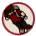
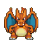
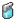
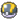
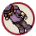
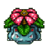

Painel
Todas as contas ao vivo, com XP/h, gold/h, Pokémon em luta e itens.
Até 4 contas em segundo plano, o melhor lugar para caçar calculado com as regras de combate do jogo, automações e os bônus das lives, sem trocar de aba.
Windows 10/11 · grátis
Ver no GitHub · Todas as versões
💻 O PokeIdle DEX é para PC com Windows 10/11. Abra este site no computador para baixar.



Ultra Potion 5.620
Ultra Ball 9.418

Simula o Pokémon ativo da conta em cada hunt, com as regras de combate do jogo. Sem bônus de XP (VIP, boosts).
| # | Pokémon | Nível | Abates/h | Mata em | XP/h | Gold/h | Risco |
|---|
Clique em Gold/h para ver o ranking mudar: a melhor hunt para XP não é a melhor para gold.
Telas reais do app recriadas aqui. Clique nas abas Painel, Onde Caçar e Lives.
O DEX não muda as regras do pokeidle.io. Ele tira o trabalho repetitivo e mostra os números que o jogo esconde, para você decidir melhor.
Exemplo real do print da aba Onde Caçar: para o Charizard nível 474, a 1ª hunt do ranking (Smoochum) dá 24,7 mi XP/h e a 5ª (Pineco) dá 21,4 mi. A diferença varia com o seu Pokémon. Os bônus de live são do próprio jogo; o DEX só deixa as lives abertas para você.
Todas as contas ao vivo, com XP/h, gold/h, Pokémon em luta e itens.
Simula o seu Pokémon em cada hunt e mostra onde rende mais XP ou gold.
Compra e venda automática e o que mais o jogo permite automatizar.
Itens, Pokémon e preços do mercado, só para consulta.
Multi-lives da Twitch numa janela e até 2 lives da Kick com troca automática.
Votar no TopIdle com cada conta, sem trocar de login.
Abre o jogo com a conta já logada, num clique.
Versão nova chega com aviso dentro do app, só com a assinatura do projeto.
Em 6 minutos o Luxca mostra o painel, as hunts, as automações e as lives no app de verdade.
Vídeo do Luxca no YouTube · abrir no YouTube
Feito para jogar junto com o jogo, não contra ele.
PokeIdle.DEX_x.y.z_x64-setup.exe começa na hora. As versões anteriores ficam no GitHub.Sim. O PokeIdle DEX é gratuito e feito nas horas vagas. Se ele te ajuda, um Pix de qualquer valor ajuda a mantê-lo vivo.
O instalador ainda não tem o certificado pago da Microsoft, então o SmartScreen avisa em todo app novo sem certificado. As atualizações dentro do app são assinadas pelo projeto e o app recusa qualquer uma sem essa assinatura.
Não. O login é feito na página oficial do jogo, dentro do app. O DEX guarda só a sessão, no cofre de credenciais do Windows.
Até 4, que é o limite do próprio jogo. O app nunca deixa passar disso e nunca burla o captcha.
Por enquanto só no Windows 10 e 11.
Não. É um projeto de fãs, sem ligação com o pokeidle.io. Pokémon e pokeidle.io pertencem aos seus donos.
Windows 10/11 · grátis · licença GPL-3.0
Ver no GitHub · Todas as versões
💻 O PokeIdle DEX é para PC com Windows 10/11. Abra este site no computador para baixar.
O app é gratuito e feito nas horas vagas pelos criadores. Qualquer valor por Pix ajuda a mantê-lo vivo e sempre atualizado.
Chave Pix (aleatória): 59b3446c-cfdb-4d0e-8760-532733ab174f
PokeIdle.DEX_…_x64-setup.exe na pasta Downloads.